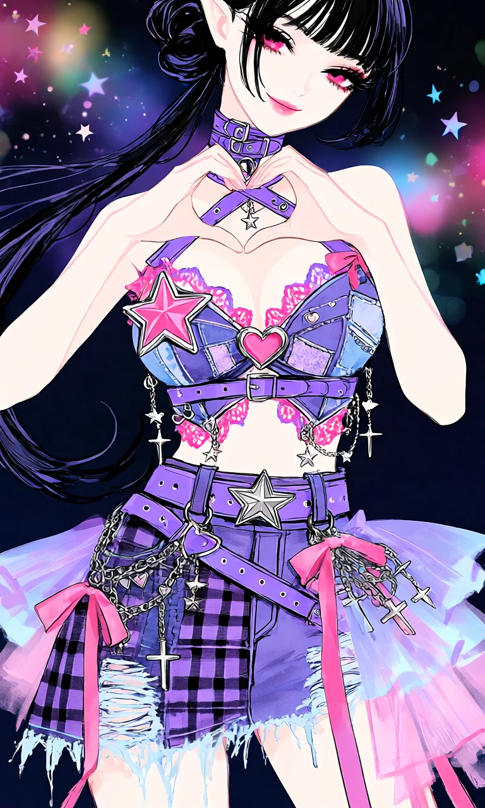
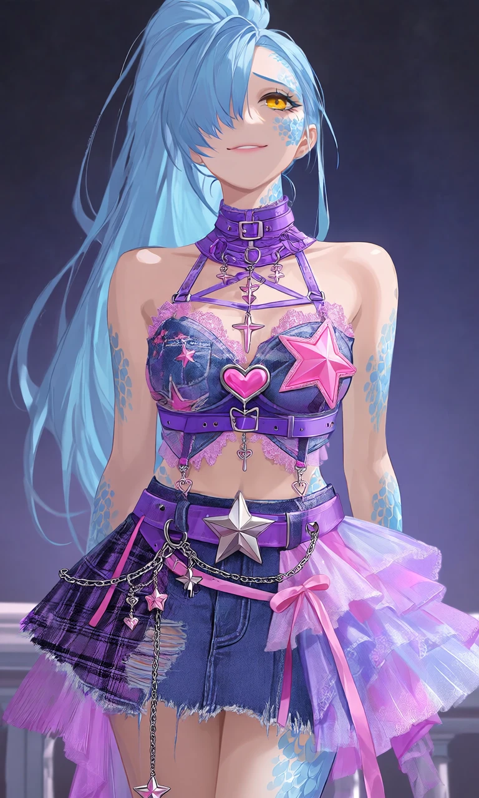

Stardust Riot

Outfit Prompt
A structured halter top that functions like a bustier or decorated bra. It features a high neck with multiple crossing straps that buckle and lace up. Made from repurposed-looking denim patches dyed in purple tones, mixed with sheer or lace sections. Prominent pink star appliqués on the cups (one large star on the left cup). Central metallic pink heart-shaped pendant/buckle that connects the cups.
Extensive lace trim--pink and purple, along edges for a delicate contrast to the edgy denim. A midriff cut-out below the bust, bridged by a horizontal purple belt with grommets and a buckle that wraps around the torso.
Dangling silver chains with star, heart, and cross charms hanging from various points (straps, sides, bottom hem of the top). Metal eyelets/grommets, buckles, and pink bows/ribbons for added texture.
Bottom (Layered Mini Skirt) Silhouette: A short, flared, asymmetrical mini skirt with heavy layering for volume and movement. Base layer appears to be purple-washed denim with plaid patches (purple/black check). Overlaid with sheer tulle and organza in gradients of purple and pink, creating a ruffled, fairy-like underskirt. Lace hems and frayed denim edges for a deconstructed look. Asymmetrical hemline — longer and more ragged on one side with flowing ribbons and tulle.
Wide purple belt with a large silver star buckle at the waist. Additional straps, belts, and chains crisscrossing the hips. Hanging star charms, metal chains, and pink satin ribbons. More grommets, buckles, and safety-pin-style accents.
A thick purple choker-style collar with buckles, D-rings, and hanging star charms — it coordinates with the halter straps. The entire look is unified by star motifs (pink fabric stars + silver hardware stars), hearts, and chains. It has a very "handcrafted" or upcycled feel, like a custom piece made from deconstructed jeans, belts, and lingerie elements.
Outfit Examples



